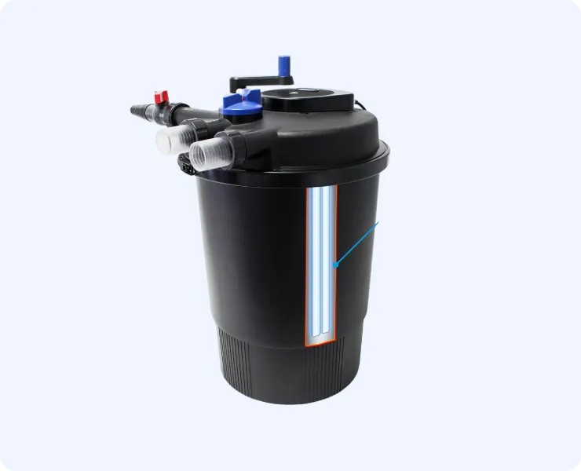

Фильтры для пруда
Фильтр напорный CPA-30000, с УФ 55Вт, для пруда до 60000л
Цена и наличие
- 1 шт.1 678,28 BYN / шт.В наличии
Данные на 23.11.2026.
Характеристики
- Бренд
- SunSun
- Тип фильтра
- напорный
- Для прудов макс.
- до 60000 л
- Мощность уф-лампы
- 55 Вт
- Для прудов max
- до 60000 л
- Максимальный поток
- 12000 л/ч
- Объем
- 75 л
- Давление
- 0.3 бар
- Размеры
- 450*450*715 мм
- Подключение
- штуцер 32/40/50 мм
- Производитель
- SunSun
- Страна происхождения
- Китай
Описание
CPA-30000 - напорный фильтр для пруда.
Фильтр напорный для пруда 60м3, CPA-30000, макс поток 12000 л/ч, 55вт, объем 75л, 0,3 бар, 450*450*715мм Фильтр для пруда CPA 30000 с автоматической промывкой выполнен по напорной схеме с биомеханической камерой и УФ стерилизатором для очистки водоема объёмом до 60000 литров без рыбы. Напорный фильтр CPA-30000 предотвратит появление вонючего болота, поддерживая первозданную чистоту в течение всего сезона в вашем оазисе. Напорный очиститель компактен и прост в эксплуатации благодаря наличию автоматической обратной промывке. Процесс очистки проходит без участия человека в автоматическом режиме. Фильтр CPA 30000 оснащен многоступенчатой системой очистки: ультрафиолетовое облучение, механическая и биологическая фильтрация. CPA 30000 благодаря своим компактным размерам, незаметно вписывается в ландшафтную обстановку как на берегу так и под ним. Фильтр 60000 л работает с горками, каскадами или ручьями при положительной температуре непрерывно в течение года 24 ч. Фильтр с автоматической обратной промывкой изготовлен из высококачественных материалов, способен выдерживать как механическое, так и агрессивное атмосферное воздействие. Фильтр СРА инновационный продукт гораздо эффективнее продукции других производителей за счет новейших разработок в области автоматики и гидромеханики.